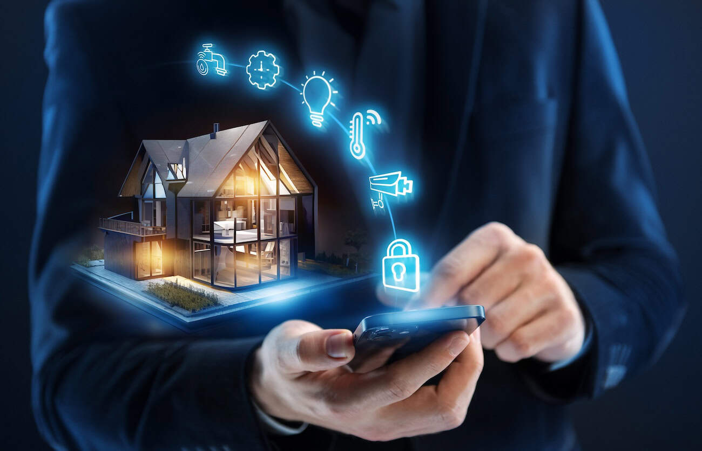

Disclaimer: Artikel dibuat karena setelah selesai maka akan menjadi sudah dibuat, terima kasih.
Dibuat oleh 2415344026

Sabar dulu, coba dijelasin apa itu smart home.

Smart home atau rumah pintar adalah konsep di mana rumah dilengkapi dengan teknologi yang memungkinkan kontrol dan otomatisasi berbagai fungsi rumah, seperti pencahayaan, pemanas, dan keamanan. Smart home adalah sekumpulan teknologi yang bisa mempermudah hidup anda yang sudah terlanjur sulit dengan melakukan apa yang sebelumnya tidak bisa dilakukan oleh manusia pada tahun 2069 jika masih tinggal di Indonesia; yakni memiliki kontrol atas bangunan sendiri.

Smart home wajib anda perhitungkan* untuk anda miliki di rumah, terlebih jika anda sudah mulai malas untuk hidup berumah-tangga. Karena dengan menerapkan teknologi pintar yang bahkan lebih pintar daripada anda dalam hal manajemen rumah tangga, anda dapat mengurangi beban kehidupan dan menjadikan hidup menjadi lebih layak dihidupi ketimbang diakhiri.
Di bawah ini adalah top 5 alasan mengapa rumah anda harus pintar saat ini:
Dengan sistem keamanan pintar, Anda dapat memilih siapa yang boleh memasuki rumah anda, anda juga bisa menambahkan opsi senapan otomatis agar tetangga anda yang mulai cerewet dan mencoba mengurusi hidup anda dapat dieksekusi ditempat.
Smart home memungkinkan anda untuk mengendalikan konsumsi energi anda dengan menutup mulut pengadu, meredupkan cahaya kepada orang-orang yang mencari panggung, dan mengatur pemanas keharmonisan tetangga. Dengan adanya sistem kontrol berbasis kesadaran, anda dapat memegang kendali lebih baik terhadap penggunaan energi anda.
Saya suka hidup yang nyaman, seharusnya anda juga! Dengan membuat rumah anda menjadi pintar, anda dapat mengubah hidup anda yang semula penuh dengan penderitaan menjadi penuh dengan kenyamanan. Bagaimana tidak, keheningan rumah tangga yang sebelumnya tidak mungkin terjadi hanya karena tetangga yang mulai julid kini bisa diatasi hanya dengan satu rentetan peluru dari senapan otomatis.
Smart home memungkinkan semua proses yang repetitif dan membosankan dapat diotomatisasi, sehingga anda lebih banyak memiliki waktu untuk membuka video game kesayangan anda dan mencaci orang di internet dengan lebih leluasa.
Smart home dapat diintegrasikan dengan asisten virtual yang saat ini anda simpan di rubanah. Dengan satu sentuhan tali yang lembut, anda dapat mengubah sistem otomatis anda dari sekedar otomatisasi menjadi kecerdasan skala besar**
**Disarankan untuk disekolahkan terlebih dahulu
*Tolong dikembalikan kalkulatornya, saya tidak meminta anda untuk berhitung.